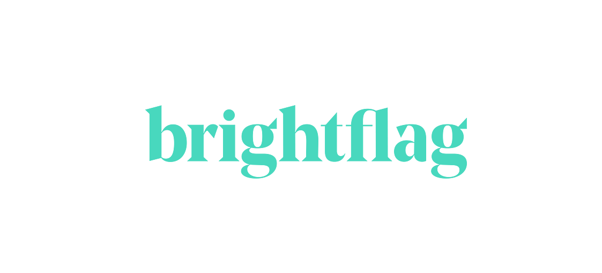
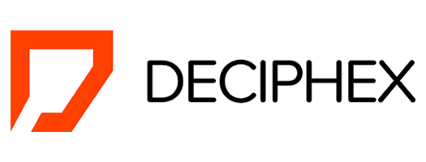
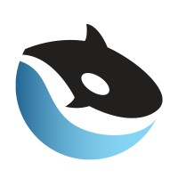

Orcawise is the global leader in 'buying signals' and market intelligence. Orcawise performs deep information analysis on public data sources to identify buying signals.
Meta
Accenture
Orcawise is the global leader in 'buying signals' and market intelligence. Orcawise performs deep information analysis on public data sources to identify buying signals.

Omdena
Orcawise is the global leader in 'buying signals' and market intelligence. Orcawise performs deep information analysis on public data sources to identify buying signals.
Google
Orcawise is the global leader in 'buying signals' and market intelligence. Orcawise performs deep information analysis on public data sources to identify buying signals.

Brightflag
Orcawise is the global leader in 'buying signals' and market intelligence. Orcawise performs deep information analysis on public data sources to identify buying signals.

Deciphex
• Experience in Annotating Pathological Images - images of organs in the human body to revamp a Multi-Labeled Image Classification Model. • Experience in writing scripts for fetching details via API calls on the slide studies, annotated images and annotated classes. • Worked with the Preclinical AI tool - Patholytix - for automating the process for non-clinical studies. • Supplemented in testing an updated version of the Patholytix tool and reporting bugs/ troubleshooting.
Bidnamics
Bidnamic is a marketing technology platform that helps retailers unlock the full potential of Google Shopping

Orcawise
• Demonstrated Contextual Language Processing to decipher frequently encountered words and perform Sentimental Analysis using NLTK package in Python. • Experience with Topic Modelling and Theme Modelling. • Worked on developing the Name Entity-Relationship (NER) Model on articles and comparing it with existing NER models such as IBM Watson.
Zerve
Description
IonCure
• Worked on building a data set on Syringe supply via communication with the manufacturers and suppliers of Syringes throughout the globe to gather production, export and import related information. • Worked on performing Data Cleaning on the gathered data, followed by analysing Syringe sales and making relevant interpretations. • Illustrated visual insights and forecasting based on the Syringe supply and demand.
Verzeo
• Displayed the gathering data to perform Sentimental Analysis - based on tweets sentiments - on the Twitter data to perform tweets analysis. • Incorporated creating negative, neutral and positive sentiments within a class label of -1, 0 and 1 for a concise distinction between sentiments. • Experience in modelling the data with classification algorithms as well as building an Ensemble model - incorporating multiple classification algorithms - to provide better understanding and accurate results. • Exemplified the interpretations using visualization tools such as Matplotlib, Seaborn and Plotly on sentiments population and frequency of sentiments.
KPMG
Orcawise is the global leader in 'buying signals' and market intelligence. Orcawise performs deep information analysis on public data sources to identify buying signals.
Government Of India
Orcawise is the global leader in 'buying signals' and market intelligence. Orcawise performs deep information analysis on public data sources to identify buying signals.
IBM
Orcawise is the global leader in 'buying signals' and market intelligence. Orcawise performs deep information analysis on public data sources to identify buying signals.